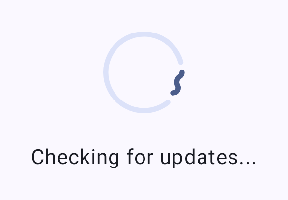
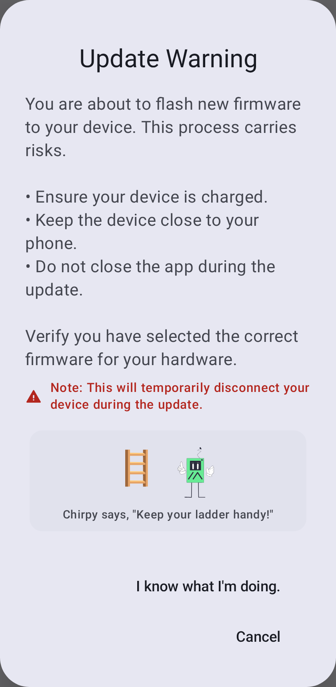
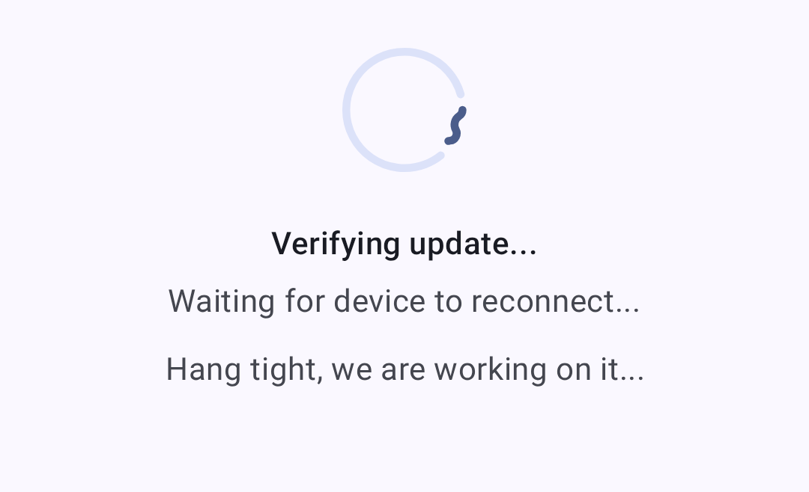
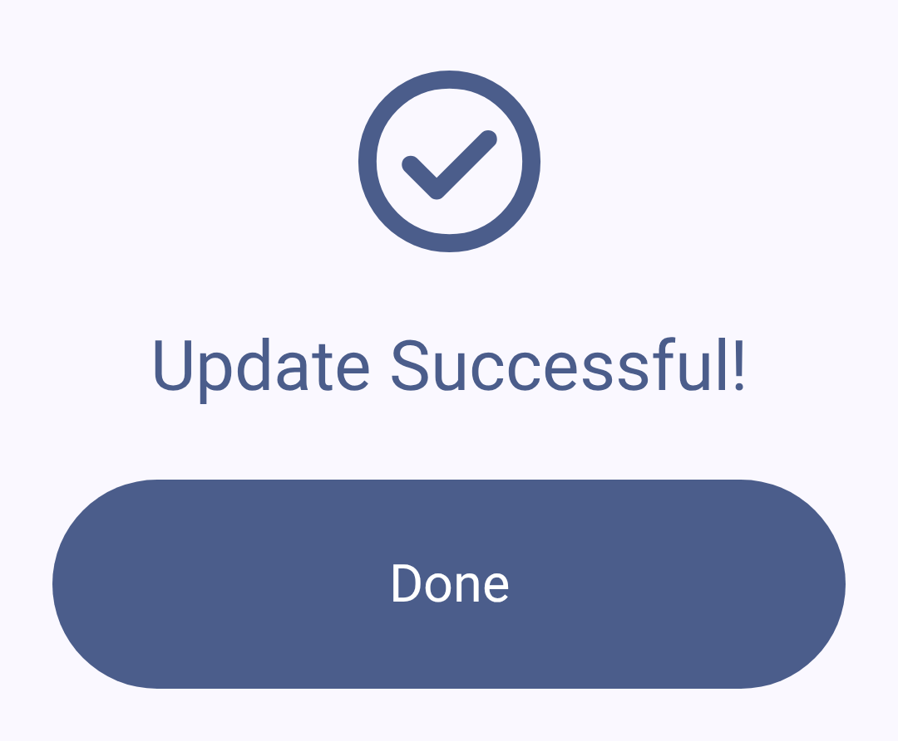
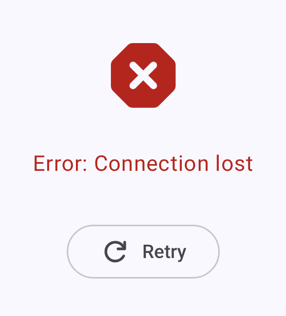

韌體更新
保持 Meshtastic 無線電裝置的韌體為最新版本，以取得新功能、錯誤修正與安全性改善。
檢查更新
- Open the connected radio’s configuration and, under Advanced, tap Firmware Update. The entry appears only for OTA-capable devices.
- 應用程式將檢查可用的韌體版本。
- 如有可用更新將顯示版本號碼與更新記錄摘要。
更新方式
OTA（無線空中下載）透過藍牙
Android 使用者最常用的更新方式：
- 請確認您的無線電裝置已透過藍牙連線。
- 前往韌體更新畫面。
- 選取所需的韌體版本。
- 點選「更新」以開始 OTA 流程。
- 請等待更新完成 — 更新期間請勿中斷連線。

⚠️ 警告：中斷韌體更新可能導致裝置變磚。 請確認無線電裝置電量充足（建議 50% 以上），並在整個更新過程中保持藍牙通訊距離。

In-App USB Update
When your radio is connected over USB/serial (rather than Bluetooth), the Firmware Update screen offers USB File Transfer. The app reboots the device into DFU mode, then prompts you to save the .uf2 file to the device’s DFU drive using the system file picker. This option appears only on a USB/serial connection — it is not available over Bluetooth.
ℹ️ nRF bootloader note: Some devices (e.g. RAK WisBlock RAK4631) need their bootloader flashed with the vendor’s serial DFU tool (such as
adafruit-nrfutil) — copying the.uf2alone won’t update the bootloader. The app surfaces a hint when this applies.
Other Flashing Options
For recovery or when neither OTA nor in-app USB is available:
- 請使用〔Meshtastic 網頁燒錄工具〕(https://flasher.meshtastic.org)
- 或在桌面版使用〔Meshtastic CLI 工具〕(https://meshtastic.org/docs/getting-started/flashing-firmware)
版本頻道
| 頻道 | 描述說明 |
|---|---|
| 穩定版 | 建議大多數使用者採用；已測試的正式版本 |
| Alpha 測試版 | 預覽版本；可能包含錯誤 |
| 本機檔案 | Flash a firmware file you select yourself, instead of a downloaded release |
更新前檢查清單
更新前請確認：
- 電量 > 50%
- 藍牙連線穩定
- 記錄目前的設定（主要版本更新時可能會重設）
- 查看版本說明中是否有重大變更
更新後
After the firmware is written, the app verifies the update and waits for the device to come back online:

Once the update succeeds:
- 無線電裝置將自動重新開機
- 藍牙連線將自動重新建立
- 確認您的設定完整無缺
- Confirm the new version under Currently Installed on the Firmware Update screen — it’s also shown on the node’s detail page and the Connections screen

故障排除
更新卡住
若更新似乎停滯不動：
- 請至少等待 5 分鐘再採取行動
- 若確實卡住，請將無線電裝置重新開關機
- 再次嘗試更新

更新後裝置無法開機
若您的裝置無法開機：
- 請嘗試透過 USB 連接至電腦
- 在復原／DFU 模式下使用網頁燒錄工具
- 燒錄已知可正常運作的韌體版本
- 前往 Meshtastic Discord 查詢特定裝置的復原步驟
相容性警告
應用程式在以下情況可能顯示警告：
- 已連接的無線電裝置韌體低於最低支援版本
- 應用程式與韌體之間的主要版本不相符
- 已棄用的功能需要進行遷移
⚠️ 重要：請在韌體更新之前或同時更新 Meshtastic 應用程式，以確保相容性。
相關主題
- 〔連線〕(connections)——韌體更新後重新連線
- (https://meshtastic.org/docs/getting-started/flashing-firmware) — meshtastic.org 上的完整韌體燒錄操作說明
- 〔支援的裝置〕(https://meshtastic.org/docs/hardware/devices) https://meshtastic.org/docs/hardware/devices — 依裝置查詢韌體相容性
- FAQ — common questions on meshtastic.org